一些Git 和 GitHub基操。
Github
快捷键: t 和 w
在你的源码浏览页面，按 t 可以快速进入模糊文件名搜索模式：
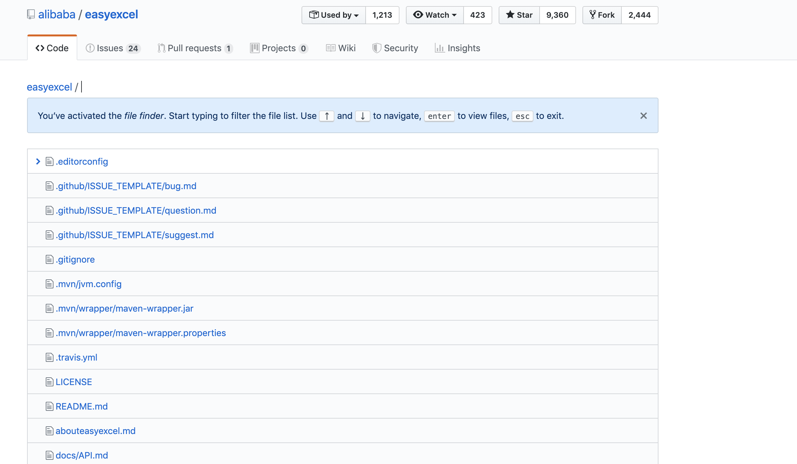
在你仓库主页，按 w 可以快速进行分支过滤：
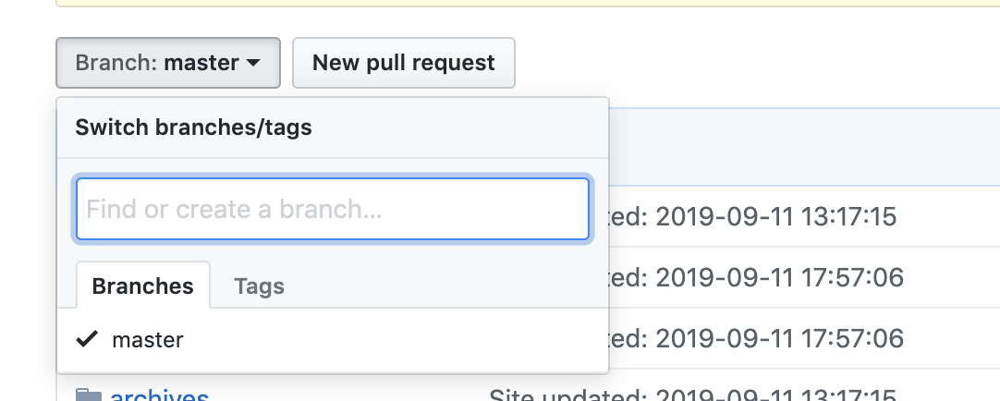
在任意 GitHub 页面中，按 ? 展示当前页面可用的快捷键：
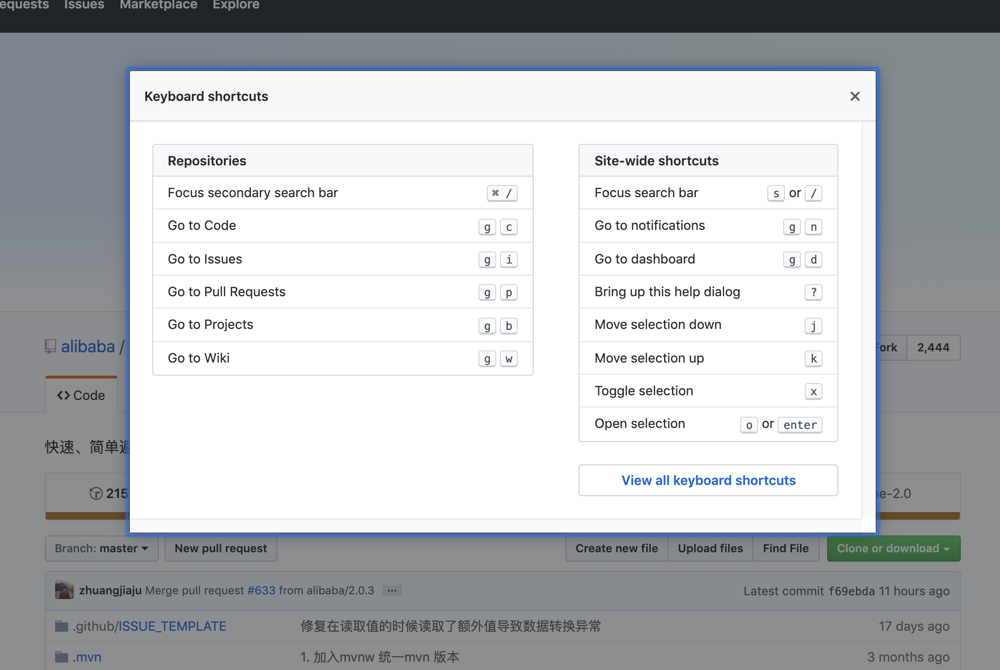
忽略空格: ?w=1
在任意的 diff URL 添加 ?w=1 用来整理缩进:
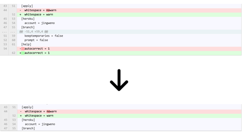
按范围过滤提交记录: master@{time}..master
你可以创建一个对比页面通过使用 URL github.com/user/repo/compare/{range}。范围 (range) 可以是两个 SHA 例如 sha1…sha2 或者两个分支名称例如 master…my-branch。范围同时也非常智能的支持使用时间作为关注点。你可以通过 master@{1.day.ago}…master 过滤从昨天开始的提交。例如：链接，https://github.com/rails/rails/compare/master@{1.day.ago}…master 显示 Rails 项目中全部昨天开始的提交记录和变化：
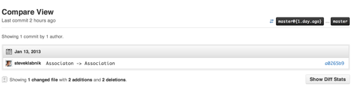
##按作者过滤提交记录: ?author=github_handle
你可以通过在对比页面URL中增加 ?author=github_handle 来按作者过滤提交记录。例如：链接 https://github.com/dynjs/dynjs/commits/master?author=jingweno 显示 jingweno 对 Dynjs 的提交记录：
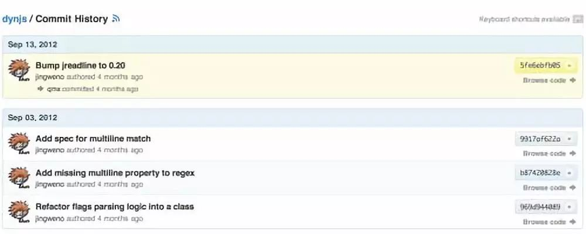
.diff 和 .patch
在比较页面、合并请求页面或者评论页面的URL后增加 .diff 或者 .patch，可以得到 diff 或者 patch 的文本格式。例如：链接 https://github.com/rails/rails/compare/master@{1.day.ago}…master.patch 显示Rails项目中全部昨天开始的提交记录和变化的文本格式：
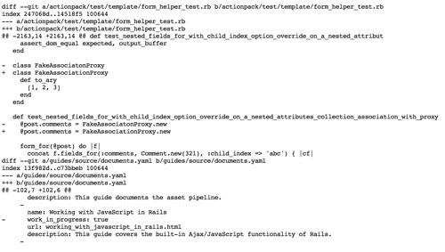
链接行
在文件展示页面，点击某行或者通过按 SHIFT 选择多行，URL 会有相应的改变。如果你要给你的队友分享一段代码是非常方便的：
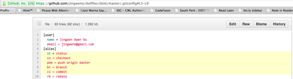
自动链接
在合并请求、问题、或者任何评论中，sha和问题码(例如：#1)会被自动链接。并且，你也可以链接其它仓库的 sha 或者问题码，格式：user/repo@sha1 或者 user/repo#1。下面是一个评论中通过sha自动链接的例子：
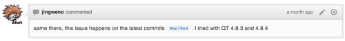
hub
Hub 是 GitHub的命令行。它提供了Git和Github之间的集成。一个最有用的命令就是在命令行输入 hub pull-request 创建pull request。详见 readme.（https://github.com/defunkt/hub#commands）。
Git
Git工作流程
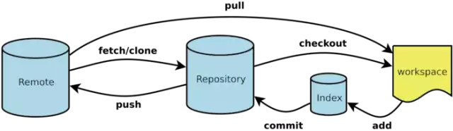
以上包括一些简单而常用的命令，但是先不关心这些，先来了解下面这4个专有名词。
- Workspace：工作区
- Index / Stage：暂存区
- Repository：仓库区（或本地仓库）
- Remote：远程仓库
工作区
程序员进行开发改动的地方，是你当前看到的，也是最新的。
平常我们开发就是拷贝远程仓库中的一个分支，基于该分支进行开发。在开发过程中就是对工作区的操作。
暂存区
.git目录下的index文件, 暂存区会记录git add添加文件的相关信息(文件名、大小、timestamp…)，不保存文件实体, 通过id指向每个文件实体。可以使用git status查看暂存区的状态。暂存区标记了你当前工作区中，哪些内容是被git管理的。
当你完成某个需求或功能后需要提交到远程仓库，那么第一步就是通过git add先提交到暂存区，被git管理。
本地仓库
保存了对象被提交 过的各个版本，比起工作区和暂存区的内容，它要更旧一些。
git commit后同步index的目录树到本地仓库，方便从下一步通过git push同步本地仓库与远程仓库的同步。
远程仓库
远程仓库的内容可能被分布在多个地点的处于协作关系的本地仓库修改，因此它可能与本地仓库同步，也可能不同步，但是它的内容是最旧的。
常用Git命令
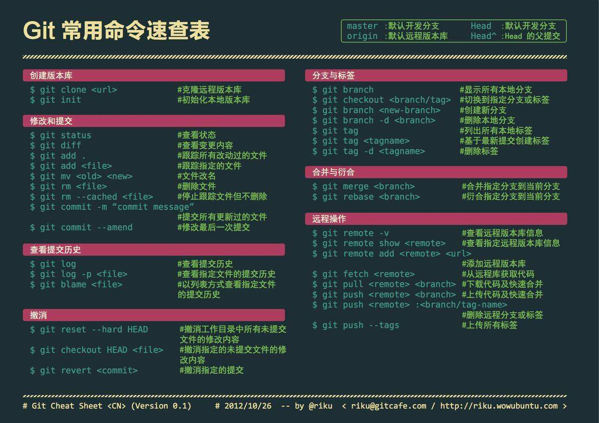
add
add相关命令很简单，主要实现将工作区修改的内容提交到暂存区，交由git管理。
| git add . | 添加当前目录的所有文件到暂存区 |
|---|---|
| git add | 添加指定目录到暂存区，包括子目录 |
| git add | 添加指定文件到暂存区 |
commit
commit相关命令也很简单，主要实现将暂存区的内容提交到本地仓库，并使得当前分支的HEAD向后移动一个提交点。
| git commit -m | 提交暂存区到本地仓库,message代表说明信息 |
|---|---|
| git commit -m | 提交暂存区的指定文件到本地仓库 |
| git commit –amend -m | 使用一次新的commit，替代上一次提交 |
branch
涉及到协作，自然会涉及到分支，关于分支，大概有展示分支，切换分支，创建分支，删除分支这四种操作。
| git branch | 列出所有本地分支 |
|---|---|
| git branch -r | 列出所有远程分支 |
| git branch -a | 列出所有本地分支和远程分支 |
| git branch | 新建一个分支，但依然停留在当前分支 |
| git checkout -b | 新建一个分支，并切换到该分支 |
| git branch –track | 新建一个分支，与指定的远程分支建立追踪关系 |
| git checkout | 切换到指定分支，并更新工作区 |
| git branch -d | 删除分支 |
| git push origin –delete | 删除远程分支 |
merge
merge命令把不同的分支合并起来。如上图，在实际开放中，我们可能从master分支中切出一个分支，然后进行开发完成需求，中间经过R3,R4,R5的commit记录，最后开发完成需要合入master中，这便用到了merge。
| git fetch | merge之前先拉一下远程仓库最新代码 |
|---|---|
| git merge | 合并指定分支到当前分支 |
一般在merge之后，会出现conflict，需要针对冲突情况，手动解除冲突。主要是因为两个用户修改了同一文件的同一块区域。如下图所示，需要手动解除。
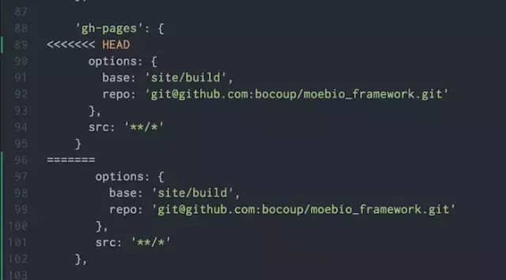
rebase
rebase又称为衍合，是合并的另外一种选择。
在开始阶段，我们处于new分支上，执行git rebase dev，那么new分支上新的commit都在master分支上重演一遍，最后checkout切换回到new分支。这一点与merge是一样的，合并前后所处的分支并没有改变。git rebase dev，通俗的解释就是new分支想站在dev的肩膀上继续下去。rebase也需要手动解决冲突。
如果你想保留完整的历史记录，并且想要避免重写commit history的风险，你应该选择使用git merge
reset
reset命令把当前分支指向另一个位置，并且相应的变动工作区和暂存区。
| git reset —soft | 只改变提交点，暂存区和工作目录的内容都不改变 |
|---|---|
| git reset —mixed | 改变提交点，同时改变暂存区的内容 |
| git reset —hard | 暂存区、工作区的内容都会被修改到与提交点完全一致的状态 |
| git reset –hard HEAD | 让工作区回到上次提交时的状态 |
revert
git revert用一个新提交来消除一个历史提交所做的任何修改。
revert与reset的区别
- git revert是用一次新的commit来回滚之前的commit，git reset是直接删除指定的commit。
- 在回滚这一操作上看，效果差不多。但是在日后继续merge以前的老版本时有区别。因为git revert是用一次逆向的commit“中和”之前的提交，因此日后合并老的branch时，导致这部分改变不会再次出现，减少冲突。但是git reset是之间把某些commit在某个branch上删除，因而和老的branch再次merge时，这些被回滚的commit应该还会被引入，产生很多冲突。关于这一点，不太理解的可以看这篇文章。
- git reset 是把HEAD向后移动了一下，而git revert是HEAD继续前进，只是新的commit的内容和要revert的内容正好相反，能够抵消要被revert的内容。
push
上传本地仓库分支到远程仓库分支，实现同步。
| git push |
上传本地指定分支到远程仓库 |
|---|---|
| git push –force | 强行推送当前分支到远程仓库，即使有冲突 |
| git push –all | 推送所有分支到远程仓库 |
其他命令
| git status | 显示有变更的文件 |
|---|---|
| git log | 显示当前分支的版本历史 |
| git diff | 显示暂存区和工作区的差异 |
| git diff HEAD | 显示工作区与当前分支最新commit之间的差异 |
| git cherry-pick | 选择一个commit，合并进当前分支 |
总结
Git 是一个设计良好的工具。Git操作常用的命令都在这里了。了解它可以直接让你更有效率并成为一个更有才华的程序员。GitHub，在另一个方面，在 Git 基础上提供便利的团队合作特性。有能力使用 GitHub 也会提高你日常效率。